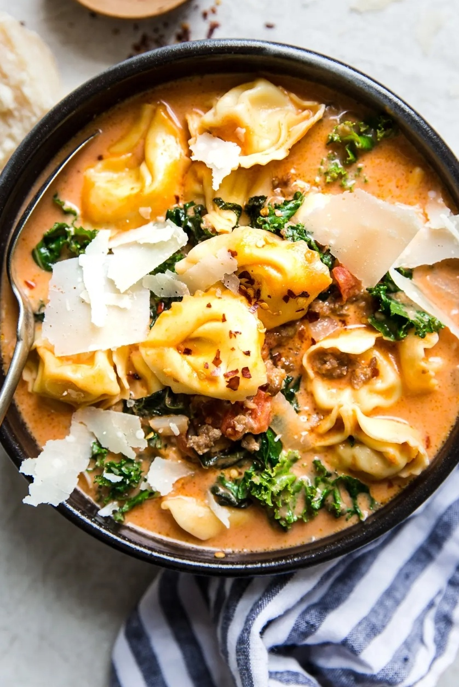

Tortellini Soup with Itailian Sausage and Kale

Description
This ultra creamy tortellini soup with itailian sauage and kale is a perfect meal
for cold nights ans is the 30 minute meal of your dreams.
Ingredients
- 1 lb hot itailian sausage, ground
- 1 onion, diced
- 4 cloves of garlic, minced
- 4 cups of chicken stock
- 1 14oz can of diced tomatoes
- 1 bunch of kale with stems removed
- 1 bag of tortellini
- 1 cup of heavy cream
- Parmesan cheese and red pepper flakes optional
Steps
- Heat a large soup pot over medium-high heat.
- Add the sausage, onion, and garlic to the pot sauté until the onions are soft and translucent, about 5 minutes.
- Add the chicken stock and tomatos and stir to incorporate.
- Bring to a boil, season with salt and then simmer for 15 minutes.
- Add the kale, tortellini, and cream. Simmer for 3-5 minutes or until the kale and pasta is tender.
- Serve with parmesan cheese and red pepper flakes if desired.